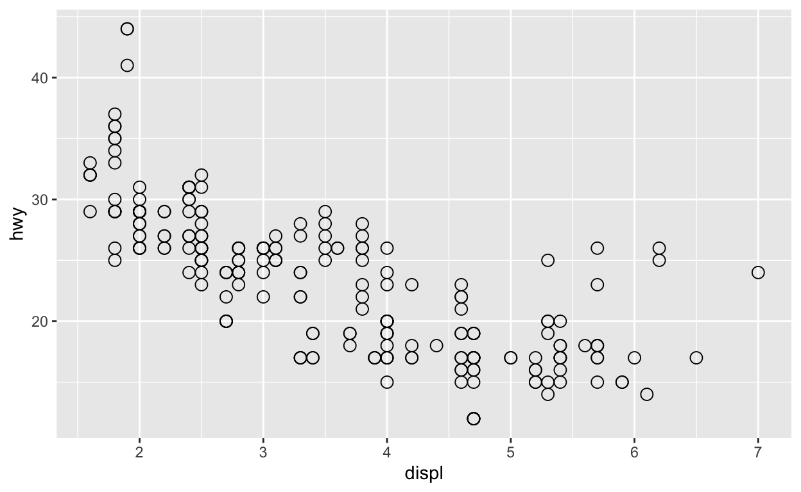
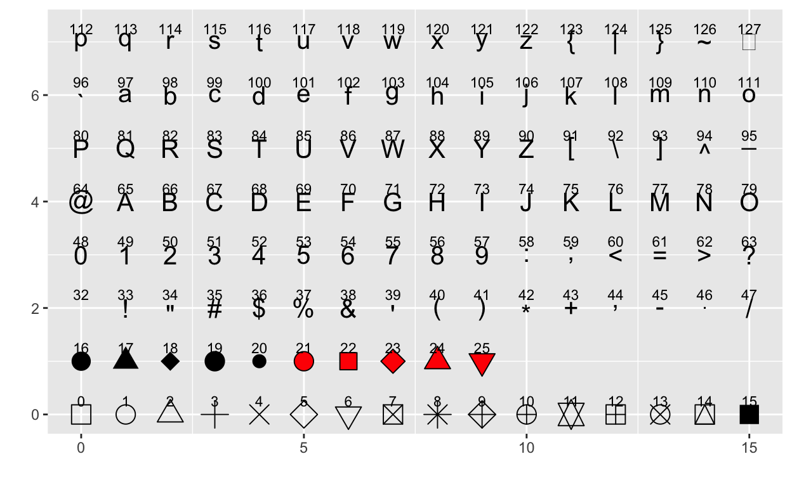

Introducción
“No hay ninguna herramienta estadística que sea más poderosa que una gráfica bien elegida.”
Tukey, Chambers, Cleveland & Kleiner
¿Por qué gráficar?
- No es suficiente la información estadística que se tiene de los datos.
- Un mayor entendimiento del conjunto de datos.
- Resolver preguntas de investigación.
Una buena visualización puede mostrar cosas que no se esperaban, generar nuevas preguntas o ampliar el conocimiento de los datos. Incluso ayuda a verificar si la pregunta inicial de investigación es la correcta.
“La excelencia en la gráficas estadísticas consiste en comunicar claramente ideas complejas.” Tufte
La comunicación de la gráfica debe mostrar la verdad de los datos, ya que varias veces la información puede ser usada para dar un mensaje diferente (intencionalmente) al que debería dar.
Ejemplos
“Lo único peor que una gráfica de pie, son varias de ellas.” Tufte
Las gráficas de pie o pastel no son muy buenas comunicando el mensaje que se quiere dar. Pues no es claro diferenciar la información cuando se tienen varias categorías o valores similares.
Además, el uso de efectos 3D no proporciona información adicional a una gráfica. En ocasiones, puede distorcionar la diferencia entre magnitudes de las categorías.


Las gráficas que se muestran a continuación son más sencillas y logran representar la información de manera clara.
Es importante que cuando se realiza una gráfica el eje vertical empiece en cero.
Las gráficas de la izquierda (simuladas) confunden al lector con la diferencia de alturas entre las barras, por no empezar el eje en cero. Las gráficas correctas son las de la derecha.

En las gráficas con imágenes es importante la escala que se le da a las mismas, pues la interpretación puede ser engañosa. En la siguiente imagen se observa que Burger King es casi 3 veces más grande que Starbucks y la escala de sus imágenes no muestra esa diferencia.

Las gráficas con dos ejes verticales pueden ocasionar lecturas incorrectas. Pues al no estar en la misma escala, un aumento o disminución de las variables pueden parecer de la misma magnitud cuando realmente no lo son.
ggplot2
install.packages("ggplot2")
library(ggplot2)ggplot2 es un paquete para generar gráficas. En él se construye la gráfica agregando diferentes capas (layers). Se puede comenzar por una capa mostrando los datos en crudo e ir añadiendo mas capas con anotaciones y resúmenes estadísticos.
¿Cómo funciona?
Se incluye un conjunto de datos (data.frame) y un conjunto de objetos geométricos geom_ en un sistema de coordenadas (x,y).
Los tipos de capas que se utilizan en este curso son:
Aesthetic:
aes()propiedades de objetos por mapear en la gráfica (axis x, axis y, size, shape, color, fill).Geoms:
geom_Objetos geométricos. Estos objetos se dividen en objetos que mapean en una dimensión, dos dimensiones y tres dimensiones.Facets:
facet_División de gráficas en diferentes paneles o subgráficas.

Otro tipo de capas es theme_ y labs que sirven para dar formato a nuestra gráfica.
Diagramas de dispersión
Los diagramas de dispersión son gráficas que nos ayudan a entender la relación entre dos medidas o valores observados x y y.
Para esta sección se usará la base de datos mpg (se carga con el paquete ggplot2), que contiene información de la economía del combustible para 38 modelos de autos.
head(mpg)summary(mpg)## manufacturer model displ year
## Length:234 Length:234 Min. :1.600 Min. :1999
## Class :character Class :character 1st Qu.:2.400 1st Qu.:1999
## Mode :character Mode :character Median :3.300 Median :2004
## Mean :3.472 Mean :2004
## 3rd Qu.:4.600 3rd Qu.:2008
## Max. :7.000 Max. :2008
## cyl trans drv cty
## Min. :4.000 Length:234 Length:234 Min. : 9.00
## 1st Qu.:4.000 Class :character Class :character 1st Qu.:14.00
## Median :6.000 Mode :character Mode :character Median :17.00
## Mean :5.889 Mean :16.86
## 3rd Qu.:8.000 3rd Qu.:19.00
## Max. :8.000 Max. :35.00
## hwy fl class
## Min. :12.00 Length:234 Length:234
## 1st Qu.:18.00 Class :character Class :character
## Median :24.00 Mode :character Mode :character
## Mean :23.44
## 3rd Qu.:27.00
## Max. :44.00str(mpg)## tibble [234 × 11] (S3: tbl_df/tbl/data.frame)
## $ manufacturer: chr [1:234] "audi" "audi" "audi" "audi" ...
## $ model : chr [1:234] "a4" "a4" "a4" "a4" ...
## $ displ : num [1:234] 1.8 1.8 2 2 2.8 2.8 3.1 1.8 1.8 2 ...
## $ year : int [1:234] 1999 1999 2008 2008 1999 1999 2008 1999 1999 2008 ...
## $ cyl : int [1:234] 4 4 4 4 6 6 6 4 4 4 ...
## $ trans : chr [1:234] "auto(l5)" "manual(m5)" "manual(m6)" "auto(av)" ...
## $ drv : chr [1:234] "f" "f" "f" "f" ...
## $ cty : int [1:234] 18 21 20 21 16 18 18 18 16 20 ...
## $ hwy : int [1:234] 29 29 31 30 26 26 27 26 25 28 ...
## $ fl : chr [1:234] "p" "p" "p" "p" ...
## $ class : chr [1:234] "compact" "compact" "compact" "compact" ...Si pedimos ayuda de ?mpg, podemos ver una descripción más detallada de las variables.
La función ggplot tiene como argumentos:
data: los datos en donde está la información que queremos graficar,mapping: las variables (columnas) que van a graficarse en cada eje, se declaran dentro deaes()
Después de indicar estos argumentos, tenemos que agregar la capa que nos dice qué tipo de gráfica va a representar nuestros datos. Usamos geom_point al tratarse de una gráfica de dispersión.
Ejemplo:
ggplot(data = mpg, aes(x = displ, y = hwy)) +
geom_point()Cuando queremos que la gráfica tenga algún color en particular (que no esté relacionado con alguna variable), podemos especificarlo en la capa en donde se indica el tipo de gráfica con el argumento color.
ggplot(data = mpg, aes(x = displ, y = hwy)) +
geom_point(color = "red")¿Qué pasa si especificamos el color dentro de aes? ggplot lo toma como si se tratara de una variable.
ggplot(data = mpg, aes(x = displ, y = hwy, color = 'green')) +
geom_point()Nota: El color lo podemos indicar ya sea con el nombre del color entre comillas o bien indicando el código hexadecimal también entre comillas, como se verá más adelante.
También podemos espeficar el tamaño y la forma que queremos que tengan los puntos con los argumentos size y shape, respectivamente.
ggplot(data = mpg, aes(x = displ, y = hwy)) +
geom_point(size = 3, shape = 1)
A continuación se muestran las diferentes formas que pueden tomar los puntos en geom_point.

Ejercicio:
- Corre
ggplot(data = mpg)
ggplot(data = mpg)- Ahora especfica los ejes x y y con las variables
hwyycyl.
ggplot(data = mpg, aes(x = cyl, y = hwy))- Haz un diagrama de dispersión de
hwyvscylcon cuadrados azules.
ggplot(mpg, aes(x = cyl, y = hwy)) +
geom_point(shape = 0, color = "blue")- ¿Qué pasa si haces un scatterplot de
classvsdrv?
ggplot(mpg, aes(x = drv, y = class)) +
geom_point()Los puntos se empalman, al tratarse de variables categóricas este no es el mejor tipo de gráfica para presentarlos.
Si queremos que el color o la forma correspondan a alguna variable, lo indicamos dentro de aes.
ggplot(data = mpg, aes(x = displ, y = hwy, color = class)) +
geom_point()Ejercicio:
Crea un diagrama de dispersión de displ vs cyl coloreando por drv con puntos de tamaño 2.
ggplot(mpg, aes(x = cyl, y = displ, color = drv)) +
geom_point(size = 2)Gracias a las diferentes formas con las que cuenta ggplot, puedes graficar hasta 5 variables en una sola gráfica (aunque esto no es recomendable).
ggplot(mtcars, aes(x=mpg, y = hp)) +
geom_point(aes(color=factor(cyl), size=wt, shape = factor(am))) Histogramas
Para crear estas gráficas se divide el rango de los datos en partes iguales y se cuenta el número de observaciones que se tiene en cada rango. Estas gráficas son un método convencional para comunicar las distribuciones de los datos. Una desventaja de este tipo de gráficas es que se puede perder información de los datos dependiendo cómo se haga la partición del rango.
En esta sección se usa la base de datos diamonds (se carga con el paquete ggplot2), que contiene información de diamantes.
head(diamonds)summary(diamonds)## carat cut color clarity depth
## Min. :0.2000 Fair : 1610 D: 6775 SI1 :13065 Min. :43.00
## 1st Qu.:0.4000 Good : 4906 E: 9797 VS2 :12258 1st Qu.:61.00
## Median :0.7000 Very Good:12082 F: 9542 SI2 : 9194 Median :61.80
## Mean :0.7979 Premium :13791 G:11292 VS1 : 8171 Mean :61.75
## 3rd Qu.:1.0400 Ideal :21551 H: 8304 VVS2 : 5066 3rd Qu.:62.50
## Max. :5.0100 I: 5422 VVS1 : 3655 Max. :79.00
## J: 2808 (Other): 2531
## table price x y
## Min. :43.00 Min. : 326 Min. : 0.000 Min. : 0.000
## 1st Qu.:56.00 1st Qu.: 950 1st Qu.: 4.710 1st Qu.: 4.720
## Median :57.00 Median : 2401 Median : 5.700 Median : 5.710
## Mean :57.46 Mean : 3933 Mean : 5.731 Mean : 5.735
## 3rd Qu.:59.00 3rd Qu.: 5324 3rd Qu.: 6.540 3rd Qu.: 6.540
## Max. :95.00 Max. :18823 Max. :10.740 Max. :58.900
##
## z
## Min. : 0.000
## 1st Qu.: 2.910
## Median : 3.530
## Mean : 3.539
## 3rd Qu.: 4.040
## Max. :31.800
## str(diamonds)## tibble [53,940 × 10] (S3: tbl_df/tbl/data.frame)
## $ carat : num [1:53940] 0.23 0.21 0.23 0.29 0.31 0.24 0.24 0.26 0.22 0.23 ...
## $ cut : Ord.factor w/ 5 levels "Fair"<"Good"<..: 5 4 2 4 2 3 3 3 1 3 ...
## $ color : Ord.factor w/ 7 levels "D"<"E"<"F"<"G"<..: 2 2 2 6 7 7 6 5 2 5 ...
## $ clarity: Ord.factor w/ 8 levels "I1"<"SI2"<"SI1"<..: 2 3 5 4 2 6 7 3 4 5 ...
## $ depth : num [1:53940] 61.5 59.8 56.9 62.4 63.3 62.8 62.3 61.9 65.1 59.4 ...
## $ table : num [1:53940] 55 61 65 58 58 57 57 55 61 61 ...
## $ price : int [1:53940] 326 326 327 334 335 336 336 337 337 338 ...
## $ x : num [1:53940] 3.95 3.89 4.05 4.2 4.34 3.94 3.95 4.07 3.87 4 ...
## $ y : num [1:53940] 3.98 3.84 4.07 4.23 4.35 3.96 3.98 4.11 3.78 4.05 ...
## $ z : num [1:53940] 2.43 2.31 2.31 2.63 2.75 2.48 2.47 2.53 2.49 2.39 ...?diamondsEjemplo:
ggplot(data = diamonds, aes(x = price)) +
geom_histogram()Los argumentos que podemos modificar en la capa de geom_histogram son:
bins: número de intervalos,color: color del contorno de las barras,fill: color del relleno de las barras,alpha: transparencia. Toma valores del 0.1 al 1.
ggplot(data = diamonds, aes(x = price)) +
geom_histogram(bins = 10, color = "white", fill = "forestgreen")Ejercicio:
- Grafica un histograma de la variable
depthcon 20bins. Además, que el contorno de las barras sea de color blanco y el relleno de color “#946471”.
ggplot(data = diamonds, aes(x = depth)) +
geom_histogram(bins = 20, color = 'white', fill = '#946471')- Ahora cambia el grado de transparencia a 0.5.
ggplot(data = diamonds, aes(x = depth)) +
geom_histogram(bins = 20, color = 'white', fill = '#946471', alpha = 0.5)Gráfica de barras
Para crear las gráficas de barras es necesario que la variable sea categórica, ya que el tamaño de la barra es la frecuencia de la categoría dentro de la variable. Estas gráficas ayudan para comparar las frecuencias relativas o absolutas.
En esta sección seguiremos utilizando la base de diamonds.
Al igual que la capa geom_histogram, geom_bar tiene los argumentos de color, relleno y transparencia. Otro argumento para esta gráfica es width, que indica el ancho de las barras.
Ejemplo:
ggplot(data = diamonds, aes(x = cut)) +
geom_bar()ggplot(data = diamonds, aes(x = cut)) +
geom_bar(width = .5, color = "pink", fill = "blue")Una capa más que es últil en este tipo de gráficas es coord_flip() que ayuda a rotar los ejes.
ggplot(data = diamonds, aes(x = cut, fill = color)) +
geom_bar() +
coord_flip()###· Ejercicio:
- Grafica ahora con variable la variable
claritycambiando el color de relleno por rojo
ggplot(data = diamonds, aes(x = clarity)) +
geom_bar(fill = "red")Muchas veces las gráficas de barras se utilizan para representar proporciones. Usando ggplot se haría de la siguiente manera.
ggplot(data = diamonds, aes(x = cut, y = ..prop.., group = 1)) +
geom_bar()- Gráficar ahora la proporción de la variable
color
ggplot(data = diamonds, aes(x = color, y = ..prop.., group = 1)) +
geom_bar()Líneas
Las gráficas de líneas por lo general se usan para series de tiempo, éstas son útiles cuando la relación de dos variables es limpia, es decir cuando un valor de x tiene un valor único en y.
En esta sección se usa la base de datos economics, que contiene información de la economía de Estados Unidos.
head(economics)summary(economics)## date pce pop psavert
## Min. :1967-07-01 Min. : 506.7 Min. :198712 Min. : 2.200
## 1st Qu.:1979-06-08 1st Qu.: 1578.3 1st Qu.:224896 1st Qu.: 6.400
## Median :1991-05-16 Median : 3936.8 Median :253060 Median : 8.400
## Mean :1991-05-17 Mean : 4820.1 Mean :257160 Mean : 8.567
## 3rd Qu.:2003-04-23 3rd Qu.: 7626.3 3rd Qu.:290291 3rd Qu.:11.100
## Max. :2015-04-01 Max. :12193.8 Max. :320402 Max. :17.300
## uempmed unemploy
## Min. : 4.000 Min. : 2685
## 1st Qu.: 6.000 1st Qu.: 6284
## Median : 7.500 Median : 7494
## Mean : 8.609 Mean : 7771
## 3rd Qu.: 9.100 3rd Qu.: 8686
## Max. :25.200 Max. :15352str(economics)## tibble [574 × 6] (S3: spec_tbl_df/tbl_df/tbl/data.frame)
## $ date : Date[1:574], format: "1967-07-01" "1967-08-01" ...
## $ pce : num [1:574] 507 510 516 512 517 ...
## $ pop : num [1:574] 198712 198911 199113 199311 199498 ...
## $ psavert : num [1:574] 12.6 12.6 11.9 12.9 12.8 11.8 11.7 12.3 11.7 12.3 ...
## $ uempmed : num [1:574] 4.5 4.7 4.6 4.9 4.7 4.8 5.1 4.5 4.1 4.6 ...
## $ unemploy: num [1:574] 2944 2945 2958 3143 3066 ...?economicsEjemplo:
ggplot(data = economics, aes(x = date, y = pop)) +
geom_line()base_d_mod <- diamonds %>%
group_by(cut) %>%
summarise(media_precio = mean(price))## `summarise()` ungrouping output (override with `.groups` argument)ggplot(base_d_mod, aes(x = cut, y = media_precio, group = 1)) +
geom_point() +
geom_line()Ejercicios
- Gráficar ahora con la varible
datevspce.
ggplot(data = economics, aes(x = date, y = pce)) +
geom_line()Boxplots
Los diagramas de caja son las mejores gráficas para conocer la distribución de las variables. Es un método que grafica el resumen de los datos.
Ejemplo:
Para este ejemplo se usará de nuevo la base diamonds
ggplot(data = diamonds, aes(x = cut, y = price)) +
geom_boxplot()ggplot(data = diamonds, aes(x = cut, y = price, fill = cut)) +
geom_boxplot()ggplot(data = diamonds, aes(x = cut, y = price, color = cut)) +
geom_boxplot()Con la función facet_wrap() podemos generar gráficas de panel.
ggplot(data = diamonds, aes(x = clarity, y = price)) +
geom_boxplot() +
facet_wrap(~cut)La función coord_flip() nos ayuda a intercambiar los ejes.
ggplot(data = diamonds, aes(x = clarity, y = price)) +
geom_boxplot() +
facet_wrap(~cut) +
coord_flip()Ejercicios
- Gráficar ahora con la variable
pricevscolorusando la variablecolorpara el relleno de las cajas.
ggplot(data = diamonds, aes(x = color, y = price, fill = color)) +
geom_boxplot()- ¿Qué gráfica haría para saber el tipo de anillo con mayor costo?
Formatos
Para personalizar nuestras gráficas podemos utilizar las funciones de la familia theme_ y la función labs. Esta última sirve para agregary modificar las etiquetas principales de nuestras gráficas, como son título, subtítulo y nombres de los ejes.
Si queremos usar fondo blanco, en lugar del gris predeterminado usamos theme_bw().
ggplot(data = diamonds, aes(x = color, y = price, fill = color)) +
geom_boxplot() +
theme_bw() +
labs(x = "Color", y = "Precio", title = "Boxplot", subtitle = "precio vs color")Un tema o theme_ que genera gráficas con los mínimos elementos necesarios es theme_minimal().
ggplot(data = diamonds, aes(x = color, y = price, fill = color)) +
geom_boxplot() +
theme_minimal() +
labs(x = "Color", y = "Precio", title = "Boxplot", subtitle = "precio vs color")Como último ejemplo podemos usar theme_classic() para solo dibujar el eje x y y sin dibujar una cuadrícula.
ggplot(data = diamonds, aes(x = color, y = price, fill = color)) +
geom_boxplot() +
theme_classic() +
labs(x = "Color", y = "Precio", title = "Boxplot", subtitle = "precio vs color")Para explorar otros formatos puedes buscar “theme” en el panel de Help en RStudio.
Correlaciones
A partir de esta sección veremos algunas gráficas que además de depender de ggplot2, dependen de otras librerías o métodos.
Las gráficas de correlaciones y/o mapas de calor nos permiten entender el grado de correlacción entre dos variables.
La función ggcorrplot de la librería ggcorrplor nos ayuda a visualizar matrices de correlación modificando ciertos elementos, entre los que destacan:
corr: Matriz de correlación.method: Tipo de visualización (por default “square”).type: Despliegue completo o parcial.hc.order: Si es TRUE, Ordenamiento de la matrix usando hclust.orderedhc.method: Método de aglomeración para hclust.show.diag: Despliegue de la diagonal de la matriz de correlación.
Ejemplo
Para este ejemplo ocuparemos el dataset de prueba mtcars y la función cor (disponible en R base) para obetener la matriz de correlación.
corr <- round(cor(mtcars), 1)
head(corr)## mpg cyl disp hp drat wt qsec vs am gear carb
## mpg 1.0 -0.9 -0.8 -0.8 0.7 -0.9 0.4 0.7 0.6 0.5 -0.6
## cyl -0.9 1.0 0.9 0.8 -0.7 0.8 -0.6 -0.8 -0.5 -0.5 0.5
## disp -0.8 0.9 1.0 0.8 -0.7 0.9 -0.4 -0.7 -0.6 -0.6 0.4
## hp -0.8 0.8 0.8 1.0 -0.4 0.7 -0.7 -0.7 -0.2 -0.1 0.7
## drat 0.7 -0.7 -0.7 -0.4 1.0 -0.7 0.1 0.4 0.7 0.7 -0.1
## wt -0.9 0.8 0.9 0.7 -0.7 1.0 -0.2 -0.6 -0.7 -0.6 0.4ggcorrplot(corr,
hc.order = TRUE,
type = "lower",
lab = TRUE,
lab_size = 3,
method="circle",
colors = c("tomato2", "white", "springgreen3"),
title="Correlograma de la base mtcars",
ggtheme=theme_bw)O bien podemos mostrar la cuadrícula completa y cambiar la escala de colores
ggcorrplot(corr,
hc.order = TRUE,
type = "full",
lab = TRUE,
lab_size = 3,
method="square",
colors = c("#660066", "#009999", "#66ff99"),
title = "Correlograma de la base mtcars",
ggtheme = theme_bw)Con el parámetro p.mat podemos marcar aquellas correlaciones no significativas, y con insig = "blank" podemos simplemente dejarlas en blanco. Para ello debemos calcular los p-values de nuestro conjunto de datos.
#Obtenemos los p-values usando cor_pmat
p.mat <- cor_pmat(mtcars)
ggcorrplot(corr,
hc.order = TRUE,
type = "lower",
method="square",
colors = c("#660066", "white", "#66ff99"),
title = "Correlograma de la base mtcars",
p.mat = p.mat,
ggtheme = theme_bw)ggcorrplot(corr,
hc.order = TRUE,
type = "lower",
method="square",
colors = c("#660066", "white", "#66ff99"),
title = "Correlograma de la base mtcars",
p.mat = p.mat,
insig = "blank",
ggtheme = theme_bw)Ejercicio:
- Utilizando los datos anteriories, pon en blanco los valores no significativos. Incluye los valores en cada recuadro y da el valor de “upper” al argumento
type. Usa el tema y colores de tu preferencia.
corr <- round(cor(mtcars), 1)
p.mat <- cor_pmat(mtcars)
ggcorrplot(corr,
hc.order = TRUE,
type = "upper",
lab = TRUE,
color = c("#708090", "white", "#32cd32"),
p.mat = p.mat,
insig = "blank",
ggtheme = theme_classic)Smooth
Los gráficos de smooth nos permiten agregar una regresión lineal a nuestro gráfico de dispersión mediante la función geom_smooth.
Además de los elementos que hemos visto antes, existen elementos específicos y muy funcionales que pueden ocuaparse en geom_smooth:
span: fracción de puntos que deseados usar para el smoothmethod: método linealformula: fórmula de suavizadose: mostrar el intervalo de confianza
Ejemplos
Para este tipo de gráficos es necesario generar previamente un gráfico de dispersión y posteriormente se realiza el “smooth”. Para este ejemplo utilizaremos el dataset de prueba mpg.
ggplot(mpg, aes(x = displ, y = cty)) +
geom_point()+
geom_smooth()## `geom_smooth()` using method = 'loess' and formula 'y ~ x'El parámetro span nos permite determiar la fracción de puntos que deseamos usar para el smooth.
A medida que este parámetro sea más grande se logra un efecto más suavizado.
ggplot(mpg, aes(x = displ, y = cty)) +
geom_point () +
geom_smooth ( span = .3 )## `geom_smooth()` using method = 'loess' and formula 'y ~ x'Ejercicios:
- Genera un gráfico de puntos con smooth de las variables displ vs hwy usando 0.3 de fracción de punto y mostrando el intervalo de confianza con
se. Cambia el color de la línea de smooth a “#708090” y el relleno a “#cd5c5c”.
ggplot(mpg, aes(x = displ, y = hwy)) +
geom_point () +
geom_smooth ( span = 0.3,
se = TRUE,
color = "#8b8989",
fill = "#cd5c5c")- Ahora cambia el span de la gráfica por .8 fracción de punto
ggplot(mpg, aes(x = displ, y = hwy)) +
geom_point () +
geom_smooth ( span = .8,
se = TRUE,
color = "#8b8989",
fill = "#cd5c5c")¿Qué pasa con la forma de la curva? ¿Qué sucede con el intervalo de confianza?
Si pretendemos lograr un ajuste basado en un modelo específico podemos lograrlo con el parámetro method y podemos aplicar el mismo método por subgrupos distinguiéndolos por colores con el parámetro color y los ajustamos manualmente para mejorar la apariencia con la capa scale_color_manual
ggplot(mpg, aes(x = displ, y = cty, color = fl)) +
geom_point () +
geom_smooth (method = lm , formula = y ~ poly(x, 2), se = FALSE) +
scale_color_manual(values = c("#AC92EB", "#A0D568", "#4FC1E8", "#ED5564", "#FFCE54")) +
theme_classic()
Si deseamos visualizar cada subgrupo por separado, podemos hacerlo agregando la capa facet_wrap y agregamos algún tema de nuestra elección.
ggplot(mpg, aes(x = displ, y = cty, color = fl)) +
geom_point () +
geom_smooth (method = lm , formula = y ~ poly(x, 2), se = FALSE) +
scale_color_manual(values = c("#9B99FF", "#94D5FF", "#B7FFBD", "#FF8B93", "#FEFF8C")) +
facet_wrap(~ fl) +
theme_classic()Encircle
Los gráficos de encircle permiten agrupar distintos puntos en polígonos. Para este tipo de gráficos usaremos la función geom_encircle de la librería ggalt.
ggplot(mpg, aes(x = displ, y = cty, color = manufacturer)) +
geom_point () +
geom_encircle()Podemos usar fill para rellenar las áreas del polígono, así como modificar la transparencia para poder visualizar todos los subgrupos.
ggplot(mpg, aes(x = displ, y = cty)) +
geom_encircle( aes(fill = manufacturer), alpha = 0.4) +
geom_point() +
theme_light()si deseamos visualizar los polígonos por separado, podemos agregar unfacet_wrap.
ggplot(mpg, aes(x = displ, y = cty)) +
geom_encircle( aes(fill = manufacturer), alpha = 0.4) +
geom_point() +
theme_light() +
facet_wrap(~manufacturer)####Ejercicios: - Realiza un gráfico de punto utiizando encircle de las variables displ vs hwy cuyo relleno sea la variable class.
ggplot(mpg, aes(x = displ, y = hwy)) +
geom_encircle( aes(fill = class)) +
geom_point() +
theme_light()- Agrégale una transparencia de 0.4
ggplot(mpg, aes(x = displ, y = hwy)) +
geom_encircle( aes(fill = class), alpha = 0.4) +
geom_point() +
theme_light()- Por último genera un
facet_wrappor manufacturer
ggplot(mpg, aes(x = displ, y = hwy)) +
geom_encircle( aes(fill = class), alpha = 0.4) +
geom_point() +
theme_light() +
facet_wrap(~ manufacturer)Jitter
Lo gráficos de jitter nos permiten visualizar un conjunto de valores pertenecientes a un mismo nivel.
Cuando tenemos una variable categórica e intentamos visualizar las repuestas de esta variable, con geom_point obtenemos algo como lo siguiente:
ggplot(mpg, aes(cyl, hwy)) +
geom_point()Lo cual no nos permite visualizar cuántos puntos tenemos en un valor determinado. Para poder observar la dispersión de esos puntos y su frecuencia, introcucimos un gráfico de jitter mediante la función geom_jitter, la cual cuenta con dos elementos que destacan:
weight: Dispersión de los datos a lo anchoheight: Dispersión de los datos a lo largo
Ejemplos
ggplot(mpg, aes(x = cty, y = hwy, color = fl)) +
geom_jitter(width = .5, height = .5)Luego agregamos los colores muanualmente y cambiamos el tema.
ggplot(mpg, aes(x = cty, y = hwy, color = fl)) +
geom_jitter(width = .5, height = .5) +
scale_color_manual(values = c("#9B99FF", "#94D5FF", "#B7FFBD", "#FF8B93", "#FEFF8C")) +
theme_light()Ejercicios:
- Realiza un gráfico de jitter de las variables hwy vs cty, con una dispersión a lo ancho de 0.2 y a lo largo de 0.5.
ggplot(mpg, aes(x = hwy, y = cty)) +
geom_jitter(width = .2, height = .5)- Agrega el argumento color por medio de la variable manufacturer.
ggplot(mpg, aes(x = hwy, y = cty, color = manufacturer)) +
geom_jitter(width = .2, height = .5)Gráficas al margen
Si deseas visualizar tanto la relación entre dos variables como su distribución, puedes graficar dichas distribuciones en el margen de la gráfica con la función ggMarginal de ggExtra. Sus parámetros principales son:
p: Objeto de ggplot2.data: El objeto data.frame con la información.x,y:Variables a usar.type: El tipo de gráfica a usar como margen : “density”, “histogram”, “boxplot”,“violin”.margins: Márgenes a mostrar, ya sea solo “x”, “y” o ambos.
Dentro de ggMarginal podemos agregar las características que originalmente poseen los tipos de gráfica que hemos visto anteriormente, tales como fill, color, etc. Esto se logra escribiendo estos argumentos de estilo dentro de una lista que se pasa a los argumentos xparams o yparams, dependiendo el eje que se va a editar.
###Ejemplo
Realizaremos una gráfica de geom_smooth sobre el data set mpg para observar la relación entre las variables cty y hwy.
g <- ggplot(mpg, aes(cty, hwy)) +
geom_jitter() +
geom_smooth(method="lm", se=F) +
theme_light()
ggMarginal(g, type = "histogram",xparams = list(colour = "black", fill = "#00ced1"),
yparams = list(colour = "black", fill = "#ff6347"))## `geom_smooth()` using formula 'y ~ x'
## `geom_smooth()` using formula 'y ~ x'Podemos mostrar la distribución de un solo eje.
ggMarginal(g, type = "density", margins = "y")## `geom_smooth()` using formula 'y ~ x'
## `geom_smooth()` using formula 'y ~ x'Ejercicios:
- Genera un gráfico de puntos de las variables displ vs cty, donde se muestre un gráfico de desidad de dipsl.
g <- ggplot(mpg, aes(displ, cty)) +
geom_point()
ggMarginal(g, margins = "x", type = "density")- Genera un gráfico de puntos de las variables displ vs cty, donde se muestren las gráficas de boxplot de ambas. Además que el relleno de los boxplots sea “#00E699” para displ y “#0073E6” para cyt.
g <- ggplot(mpg, aes(displ, cty)) +
geom_point()
ggMarginal(g, type = "boxplot", xparams = list(fill = "#00E699"),
yparams = list(fill = "#0073E6"))##Violín
Los gráficos de violín nos permiten ver la distribución de distintos grupos en conjunto. La información que nos aportan estos gráficos no es muy diferente comparada con un gráfico de box plot, sin embargo la visualización cambia. Para generarlos usamos la capa geom_violin
###Ejemplo
Utilizando el dataset mpg, graficamos la distribución del kilometraje por ciudad para cada clase de vehículo.
ggplot(mpg, aes(class, cty)) +
geom_violin() +
labs(title = "Gráfico de violín",
subtitle = "City Mileage vs Class of vehicle",
caption = "Source: mpg",
x = "Class of Vehicle",
y = "City Mileage")
Podemos agrupar y cambiar la posición.
ggplot(mpg, aes(class, cty, fill = factor(fl))) +
geom_violin() +
labs(title = "Gráfico de violín",
subtitle = "City Mileage vs Class of vehicle",
caption = "Fuente: mpg",
x = "Class of Vehicle",
y = "City Mileage") +
theme_minimal()Ejercicio:
- Realiza un gráfico de violín de las variables class vs hwy.
ggplot(mpg, aes(class, hwy)) +
geom_violin()- Agrega el
color“#0095B3” unfillde “#99DDFF” y unalphade 0.5 al gráfico de violín.
ggplot(mpg, aes(class, hwy)) +
geom_violin(color = "#0095B3", fill = "#99DDFF", alpha = .5) ##Tufte
Los gráficos de Tufte fueron inspirados en el trabajo de Edward Tufte y su finalidad es mostrar un gráfico de boxplot con una visualización más simple y minimalista.
###Ejemplo
Si queremos visualizar la distribución del kilometraje de ciudad por clase de auto de una manera simple y resumida, la mejor manera de visualizarlo es con un gráfico de geom_tufteboxplot de la librería ggthemes.
ggplot(mpg, aes(manufacturer, cty)) +
geom_tufteboxplot() +
theme(axis.text.x = element_text(angle = 65, vjust = 0.6)) +
labs(title="Gráfico estilo Tufte",
subtitle="Kilometraje en ciudad por clase de auto",
caption="Fuente: mpg",
x = "Class of Vehicle",
y = "City Mileage")Ejercicio:
- Realiza un gráfico de tufte de las variables class vs cty que tenga color “#B300B3” y transparencia de 0.8 y un
theme_classic.
ggplot(mpg, aes(manufacturer, cty)) +
geom_tufteboxplot(color = "#B300B3", alpha = .8) +
theme_classic()##Barras apiladas
Otra forma de presentar la información por bloques es con gráficas de barras, basándonos en la función geom_bar, como vimos anteriormente.
Existen dos formas de presentar las gráficas de barras, la primera es con una tabla donde ya se muestren las frecuencias de cada categoría, y la segunda es haciéndolo con la variable directa.
Si ya contamos con las frecuencias, hay que establecer el parámetro stat = identity.
###Ejemplo
freqtable <- table(mpg$manufacturer)
df <- as.data.frame.table(freqtable)
names(df) <- c("Manufacturer", "Frequency")
head(df)g <- ggplot(df, aes(Manufacturer, Frequency))
g + geom_bar(stat = "identity", width = .8, fill = "#bfc2ff", color = "black") +
labs(title="Gráfica de barras",
subtitle = "Manufacturer",
caption = "Fuente: Base de datos 'mpg'") +
theme_light() +
theme(axis.text.x = element_text(angle=65, vjust=0.6),
plot.background = element_blank())Si desesmos hacerlo sobre los datos directos, no debemos poner el parámetro stat como “identity”, y en este caso podemos agrupar de diferentes formas, tales como position = "dodge" o position = "stack".
ggplot(mpg, aes(class)) +
geom_bar(aes(fill = drv), position = "stack", width = .8, color = "black") +
labs(title = "Gráfica de barras",
subtitle = "Position: stack",
caption = "Fuente: Base de datos 'mpg'") +
theme_light() +
scale_fill_manual(values = c("#660066", "#009999", "#66ff99")) +
theme(axis.text.x = element_text(angle=65, vjust=0.6),
plot.background = element_blank())ggplot(mpg, aes(class)) +
geom_bar(aes(fill = drv),position = "dodge", width = .8, color = "black") +
labs(title = "Gráfica de barras",
subtitle = "Position: dodge",
caption = "Fuente: Base de datos 'mpg'") +
theme_light() +
scale_fill_manual(values = c("#660066", "#009999", "#66ff99")) +
theme(axis.text.x = element_text(angle=65, vjust=0.6),
plot.background = element_blank()) +
coord_flip()Ejercicio:
- Genera una gráfica de barras apilada de manufacturer y
fillusando drv conposition“stack”,widthde .8 y concolor“black”.
ggplot(mpg, aes(manufacturer)) +
geom_bar(aes(fill = drv),position = "stack", width = .8, color = "black") - Cambia la paleta de colores a
c("#660099", "#008899", "#60ff00")conscale_fill_manualy agregatheme_light.
ggplot(mpg, aes(manufacturer)) +
geom_bar(aes(fill = drv),position = "stack", width = .8, color = "black") +
scale_fill_manual(values = c("#660099", "#008899", "#60ff00")) +
theme_light()##Treemap
Los gráficos o mapas de árbol son la mejor forma de mostrar datos jerárquicos con rectángulos anidados. Para realizar este tipo de gráficos es sumamente importante contar con la estructura adecuada, la función treemapify de la librería treempafiy nos ayudará a tener la estructura correcta de datos (genera el conjunto de coordenadas) bajo los siguientes elementos:
area: área de cada rectángulo.fill: Color del relleno de cada rectángulo.label: Etiqueta de cada rectángulo.group: Nombre de las distintas agrupaciones.
Si bien treemapify nos ayuda a tener la estructura, la función geom_treemapify realiiza esta conversión automáticamente y podemos usar el conjunto de datos directamente especificando los aes() a ser mapeados.
A diferencia de treemapify, la función geom_treemap recibe el parámetro subgroup en vez de group.
####Ejemplo
Para ejemplificar el mapa de árbol, tomaremos como base el dataset G20 de la librería treemapify.
head(G20)Este dataset contiene diversos datos económicos y demográficos del grupo G-20 de las principales economías mundiales.
Utilizaremos el país como cada recuadro, el área será el PIB nominal del país (gdp_mil_usd) y el color será el índice de Desarrollo Humano (hdi), además agregaremos como group la Región.
#Visualizamos la estructura que genera treemapify
treeMapCoordinates <- treemapify(G20,
area = "gdp_mil_usd",
fill = "hdi",
label = "country",
group = "region")## Warning in treemapify(G20, area = "gdp_mil_usd", fill = "hdi", label =
## "country", : `group` is deprecated, use `subgroup` instead## Warning in treemapify(G20, area = "gdp_mil_usd", fill = "hdi", label =
## "country", : `fill` is deprecated## Warning in treemapify(G20, area = "gdp_mil_usd", fill = "hdi", label =
## "country", : `label` is deprecated #Nuestro conjunto de datos ahora tiene coordenadas
head(treeMapCoordinates)Ahora hacemos el gráfico.
ggplot(G20, aes(area = gdp_mil_usd, fill = hdi, label = country,
subgroup = region)) +
geom_treemap()Observamos que no se muestran los elementos de texto, esto se debe a que treemapify cuenta con sus propias funciones para ajustar el texto general geom_treemap_text y el texto de los subgrupos geom_treemap_subgroup_text, además podemos ajustar el estilo de los bordes con geom_treemap_subgroup_border
ggplot(G20, aes(area = gdp_mil_usd, fill = hdi, label = country,
subgroup = region)) +
geom_treemap(aes(alpha = hdi)) +
geom_treemap_subgroup_border(color = "white") +
geom_treemap_subgroup_text(place = "centre", grow = T, alpha = 0.5, colour =
"black", fontface = "italic", min.size = 0) +
geom_treemap_text(colour = "white", place = "topleft", reflow = T) +
scale_alpha_continuous(range = c(0.8, 1)) +
scale_fill_continuous(low = "#ff5747" , high = "#47efff") +
labs(title = "GDP by region and country",
subtitle = "Color by HDI size") +
theme(legend.position = "none")Ejercicio:
- Utilizando los
aestheticsanteriores, agrega la capageom_treemap_subgroup_textconplace= “center” para desplegar las etiquetas de los subgruposy la capageom_treemap_textconplace= “topleft” para desplegar las etiquetas del argumentolabel.
ggplot(G20, aes(area = gdp_mil_usd, fill = hdi, label = country,
subgroup = region)) +
geom_treemap() +
geom_treemap_subgroup_text(place = "center") +
geom_treemap_text(place = "topleft")##Dendrograma
Dentro del conjunto de gráficas de agrupaciones no pueden faltar los dendrogramas. Los dendogramas son una herramienta muy poderosa que nos permite hacer un clustering jerárquico sobre un conjunto de observaciones.
Este tipo de gráficos se pueden realizar con la función ggdendrogram de la librería ggdendro. Sus principales elementos son :
data: Objeto de la clasedendrogram,hclustotree.segments: Si es TRUE, muestra las líneas de segmento.labels: Si es TRUE, muestra etiquetas de las hojas.rotate: Si es TRUE, rota el gráfico 90 grados.
###Ejemplo
Para este ejemplo usaremos el dataset de prueba USArrests que contiene información acerca de arrestos por actos delictivos en Estados Unidos. El objetivo es clusterizar aquellas áreas urbanas que sean similares dadas sus características delictivas.
head(USArrests)#Generamos un objeto de la clase hclust con el dataset de prueba USArrests
hc <- hclust(dist(USArrests), method = 'average')Para graficar, simplemente le pasamos el objeto clusterizado a ggdendrogram
p <- ggdendrogram(hc, rotate=FALSE)
print(p)ggdendrogram(hc, rotate=TRUE)####Ejercicio: - Genera un gráfico de dendrograma del objeto hc sin rotación y dejando labels como FALSE y utilizando el color “#800000”.
ggdendrogram(hc, color = "#800000", labels = FALSE)##Gráficos de Paleta/Tallo
Los gráficos de paleta nos permiten obetener una combinación entre una gráfica de barras y un gráfico de dispersión, por lo tanto nos sirven para identificar el comportamiento entre dos variables numéricas (gráfico de dispersión) o una variable numérica y otra categórica (gráfica de barras).
Para lograr esta visualización, se requieren dos funciones, una que genera el “tallo” llamada geom_segment y la que genera los puntos geom_point.
Dado que geom_segment nos permite visualizar los segmentos o tallos, podemos determinar los parámetros de inicio y final de cada segmento con las siguientes variables:
x: Valor donde inicia el segmento horizontal.xend: Valor donde termina el segmento horizontal.y: Valor donde inicia el segmento vertical.yend: Valor donde termina el segmento vertical.
###Ejemplo
Uasaremos el dataset “ChickWeight”, el cual contiene la evolución de los pesos de un conjunto de pollitos a través del tiempo y los cuáles se sometieron a distintas dietas.
head(ChickWeight)Transformaremos la información para obtener únicamente los pesos máximos y mínimos.
chick_data <- ChickWeight %>%
group_by(Chick, Diet) %>%
dplyr::mutate(max.weight = max(weight),
min.weight = min(weight)) %>%
dplyr::select(Chick, Diet, max.weight, min.weight) %>%
unique()
chicks <- chick_data[sample(nrow(chick_data), 25),]Realizamos una gráfica de paleta para observar el peso máximo de los pollitos.
ggplot(chicks, aes(x = Chick, y = max.weight)) +
geom_point(aes(colour = Diet), size = 4, alpha = 0.7) +
geom_segment( aes(x = Chick, xend = Chick, y = 0, yend = max.weight), color = "gray") +
ggtitle("Peso máximo de los pollitos") +
theme_light() Ejercicio:
- Genera un gráfico de paleta de chick vs min.weight, donde el color del segmento sea “#008099” y el de los puntos “#4DFFFF” y el size del segmento igual a 0.8 y del punto sea 4. Agrega un
facet_wrappor tipo de dieta.
ggplot(chicks, aes(x = Chick, y = min.weight)) +
geom_point(colour = "#4DFFFF", size = 4) +
geom_segment( aes(x = Chick, xend = Chick, y = 0, yend = min.weight),
color = "#008099", size = .8) +
facet_wrap(~Diet)Si quisiésaromos observar un umbral específico del peso máximo, simplemente iniciamos en ese umbral sobre el eje y. También podemos agregar el texto.
ggplot(chicks, aes(x = Chick, y = max.weight, label = max.weight)) +
geom_point(aes(colour = Diet), size = 6, alpha = 0.7) +
geom_segment( aes(x = Chick, xend = Chick, y = 200, yend = max.weight), color = "gray") +
ggtitle("Peso máximo de los pollitos") +
theme_minimal() +
geom_text(color="black", size=2)Ejercicio:
- Agrega a tu gráfica un umbral de 41 sobre el eje y.
ggplot(chicks, aes(x = Chick, y = min.weight)) +
geom_point(color = "#4DFFFF", size = 4) +
geom_segment( aes(x = Chick, xend = Chick, y = 41, yend = min.weight), color = "#008099", size = .8) Si quisiéramos ver el peso máximo y mínimo de cada pollito simplemente ajustamos el inicio y el final de los segmentos y agregamos un elemento geom_point tanto a los puntos mínimos como a los máximos.
ggplot(chicks) +
geom_segment( aes(x = Chick, xend = Chick, y = min.weight, yend = max.weight, color = Diet)) +
geom_point(aes(x = Chick, y = min.weight), size = 4, colour = "#E15A37", alpha = 0.7) +
geom_point(aes(x = Chick, y = max.weight), size = 4, colour = "#3F9490", alpha = 0.7) +
labs(title = "Peso máximo y mínimo de los pollitos") +
theme_light() Por último rotamos las coordenadas
ggplot(chicks) +
geom_segment( aes(x = Chick, xend = Chick, y = min.weight, yend = max.weight, colour = Diet)) +
geom_point(aes(x = Chick, y = min.weight), size = 4, colour = "#E15A37", alpha = 0.7) +
geom_point(aes(x = Chick, y = max.weight), size = 4, colour = "#3F9490", alpha = 0.7) +
labs(title = "Peso máximo y mínimo de los pollitos") +
theme_light() +
coord_flip()
##Dot Plots
Los gráficos “Dot” son muy siliares a los gráficos de paleta, la difrencia entre ambos es que estos se presentan de forma horizontal y sin segmentos de tamaño distinto.
###Ejemplo Para este ejemplo utilizaremos el dataset USPersonalExpenditure que contiene el gasto en 5 categorías en 5 fechas diferentes. Como es una matriz, lo convertomos en data.frame y agregamos los nombres de los renglones como otra variable.
head(USPersonalExpenditure)## 1940 1945 1950 1955 1960
## Food and Tobacco 22.200 44.500 59.60 73.2 86.80
## Household Operation 10.500 15.500 29.00 36.5 46.20
## Medical and Health 3.530 5.760 9.71 14.0 21.10
## Personal Care 1.040 1.980 2.45 3.4 5.40
## Private Education 0.341 0.974 1.80 2.6 3.64expenditure <- USPersonalExpenditure %>%
as.data.frame() %>%
dplyr::mutate(category = as.factor(rownames(USPersonalExpenditure)))
#Ordenamos por el gasto en 1960
expenditure[order(-expenditure$`1960`), ]Graficamos el gasto por categoría con geom_point y geom_segment para el año 1960.
ggplot(expenditure, aes(x = category , y = `1960`)) +
geom_point(color = "tomato2", size = 4) +
geom_segment(aes(x = category,
xend = category,
y = min(`1960`),
yend = max(`1960`)),
linetype = "dashed",
size = 0.1) +
labs(title = "Dot Plot",
subtitle = "Category Vs Expenditure") +
coord_flip() +
scale_x_discrete(limits = rev(levels(expenditure$category)))- Realiza un gráfico tipo dot de category vs 1945, donde el color de los puntos sea “#CC99FF” y tamaño 4. Utiliza
coord_flippara cambiar las coordenadas.
ggplot(expenditure, aes(x = category , y = `1945`)) +
geom_point(color = "#CC99FF", size = 4) +
geom_segment(aes(x = category,
xend = category,
y = min(`1945`),
yend = max(`1945`))) +
coord_flip()- Agrega el tipo de linea “dashed” a los segmentos, y el tema
theme_light().
ggplot(expenditure, aes(x = category , y = `1945`)) +
geom_point(color = "#CC99FF", size = 4) + # Draw points
geom_segment(aes(x = category,
xend = category,
y = min(`1945`),
yend = max(`1945`)),
linetype = "dashed") +
coord_flip() +
theme_light()##Slope
Las gráficos de slope son muy útiles cuando queremos comparar dos momentos en el tiempo. Al igual que en las gráficas de “dot” y las de paleta, nos apoyaremos de segmentos que inician en un punto del tiempo y terminan en otro.
###Ejemplo Para ejemplificarlo usaremos el mismo dataset expenditure que generamos anteriormente. Primero crearemos los segmentos que iniciarán en “1940” y terminarán en “1960”. Adicional nos apoyaremos de geom_vline para generar las líneas verticales en ambos puntos del tiempo.
p <- ggplot(expenditure) +
geom_segment(aes(x = 1, xend = 2, y = `1940`, yend = `1960` , color = category),
size = .75, show.legend = F) +
geom_vline(xintercept = 1, linetype = "dashed", size = .1) +
geom_vline(xintercept = 2, linetype = "dashed", size = .1) +
scale_color_manual(values = c("#9B99FF", "#94D5FF", "#B7FFBD", "#FF8B93", "#FEFF8C")) +
labs(
title = "Gastos por categoría",
subtitle = "Gastos en millones de dólares",
x = "",
y = "Gasto")
pggplot(expenditure) +
geom_segment(aes(x = 1, xend = 2, y = `1940`, yend = `1945` , col = category))- Agrega el tema
theme_bw()
ggplot(expenditure) +
geom_segment(aes(x = 1, xend = 2, y = `1940`, yend = `1945` , color = category)) +
theme_bw() +
scale_color_viridis_d()Podemos agregar etiquetas a los ejes.
#Etiquetas del eje y
p <- p +
geom_text(label = expenditure$category, y = expenditure$`1940`,
x = rep(1, nrow(expenditure)), size = 3, hjust = 1.1) +
geom_text(label = expenditure$category, y = expenditure$`1960`,
x = rep(2, nrow(expenditure)), size = 3, hjust = -.1)
#Etiquetas del eje x
p <- p + geom_text(label = "1940", x = 1, y = 1.1*(max(expenditure$`1940`, expenditure$`1960`)),
size = 5, hjust = 1.2) +
geom_text(label = "1960", x = 2, y = 1.1*(max(expenditure$`1940`, expenditure$`1960`)),
size = 5, hjust = -.1)
pObservamos que las etiquetas no se despliegan correctamente, por lo que modificamos los límites de “x” y “y” para visualizar las etiquetas completas:
p <- p +
xlim(.5, 2.5) +
ylim(0,(1.1*(max(expenditure$`1940`, expenditure$`1960`))))
pPor último, cambiamos la presentación de nuestra gráfica.
p + theme_classic() +
theme(panel.background = element_blank(),
axis.ticks = element_blank(),
axis.text.x = element_blank())Pirámides de población
Las pirámides de población son histogramas “encontrados” que nos ayudan a ver la distribución de la población por grupo de edad para ambos sexos. Son útiles para detectar cambios en patrones poblacionales. Varias de ellas nos ayudan a ver diferencias entre años, países, etnias, etc.
En ggplot2 podemos hacer uso de los objetos básicos para crear una gráfica de este tipo.
Ejemplo
Para este ejemplo usaremos una base de datos que contiene información de la población española en 2014, la cual descargaremos siguiendo esta instrucción:
load(url('http://gedemced.uab.cat/images/POP_ENC_AMB_2014.Rdata'))
head(POP_ENC_AMB_2014)La transformamos un poco para poder utilizarla.
dat_piramide <- POP_ENC_AMB_2014 %>%
dplyr::filter(REGION_NAC2 == 'ESP') %>%
mutate(sexo = gsub(x = sexo, pattern = '\nEspaña', replacement = ''))
range(dat_piramide$n)## [1] 0 245Usando geom_bar creamos la pirámide.
ggplot(dat_piramide) +
geom_bar(aes(edad, n, group = sexo, fill = sexo),
stat = "identity", subset(dat_piramide, sexo == 'Hombres')) +
geom_bar(aes(edad, -n, group = sexo, fill = sexo),
stat = "identity", subset(dat_piramide, sexo == 'Mujeres')) +
scale_y_continuous( breaks = seq(-300,300,50), labels = abs(seq(-300,300,50))) +
coord_flip() +
theme_minimal() +
labs(subtitle = 'Pirámide poblacional',
title = 'España 2014')Otra manera de construir una gráfica de este tipo es haciendo uso de la función facet_share del paquete ggpol.
dat_piramide %>%
mutate(n = ifelse(sexo == 'Hombres', -n, n)) %>%
ggplot(., aes(x = edad, y = n, fill = sexo)) +
geom_bar(stat = "identity") +
coord_flip() +
theme_minimal() +
labs(y = "Count", x = "Age Band", title = " ") +
scale_fill_manual(values = c("blue", "green"))Ejercicio
Consigue datos poblacionales y replica las gráficas anteriores.
Referencias
- Bar chart better than a pie
- Good bad graphs
- The 27 Worst Charts Of All Time
- ggplot2 Elegant Graphics for Data Analysis, Hadley Wickham
- The Visual Display of Quantitative Information, Edward Tufte
- Cheat Sheets